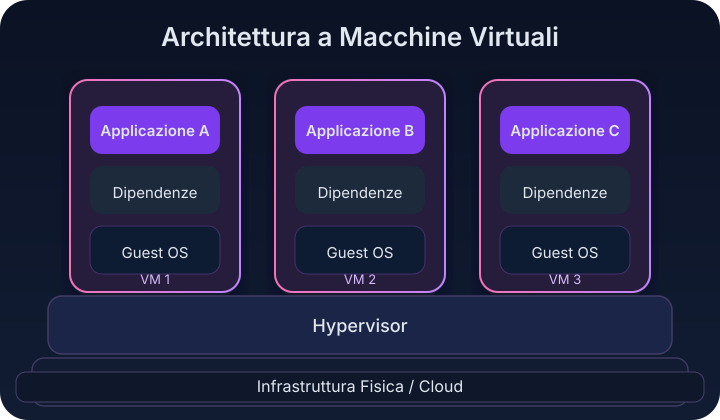
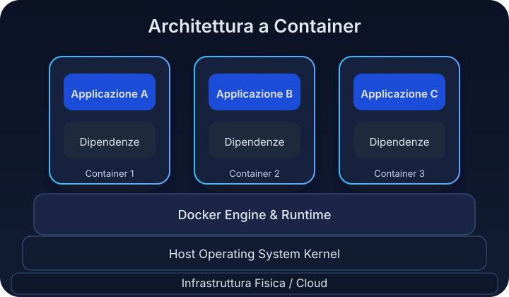

Docker: Basics

Ti è mai capitato di sentir un collega dire “sì ok ma funziona sul mio computer” e chiederti perché succede? Oppure di perdere ore a configurare un ambiente che sembrava identico a quello del collega? Ecco, questo articolo nasce proprio da lì: dal desiderio di capire perché Docker è diventato così importante e come ha cambiato il modo di sviluppare software.
Abstract
Questo articolo non è altro che il primo di una serie di articoli in cui voglio spiegare perché i container sono così importanti. In questa serie, l'obiettivo è spiegare in modo chiaro (ma tecnicamente accurato) il motivo per cui è nato Docker, come funziona e quando usarlo o non usarlo.
1. Il sempre verde problema "Funziona sul mio PC"
Uno dei problemi più classici nello sviluppo software si riassume con la classica frase "sì ma funziona sul mio PC, vedrai che riesci a farlo andare anche sul tuo". Per chi legge questo articolo e non conosce questo problema, sostanzialmente è quando il codice che sul computer di un developer gira senza problemi, ma che in un ambiente diverso (può essere un collega, come il server di test o produzione) fallisce. Riassumo brevemente un articolo che secondo me ben analizza le cause tipiche. Secondo Dave Nicolette, ci sono differenze di configurazione e drift dell'ambiente. Col tempo, in fase di sviluppo si accumulano librerie, configurazioni e dipendenze che la rendono unica.
Questo cosa causa?
Ecco, piccole discrepanze, ovvero versioni diverse di un database, un file di configurazione locale non replicato altrove, generano bug difficili da individuare. A ciò si aggiunge il cosiddetto dependency hell, ovvero la "giungla" di dipendenze software conflittuali: più un progetto cresce, più dipende da librerie esterne (con versioni potenzialmente incompatibili fra loro), creando un incubo di gestione. Quello che accade è che, se vi trovate in ambienti "multi-sviluppatore", queste divergenze causano ritardi e notti insonni per risolvere errori che "in locale andava".
Diciamo che oltre alle innumerevoli testimonianze aneddotiche, il fenomeno è talmente diffuso da essere oggetto di ironia e alcune squadre Agile, come racconta Dave Nicolette, avevano introdotto penitenze goliardiche per chi usava questa scusa (come versare una piccola multa nel fondo snack bar). Ma al di là delle battute, l'impatto reale è notevole: quando ambienti di dev/test/staging non sono allineati, si incorre in rework e ritardi. Studi recenti indicano che il 69% degli sviluppatori perde almeno 8 ore a settimana a causa di inefficienze tecniche, incluse le differenze di ambiente e build rotte per configurazioni incoerenti.
In sostanza, prima di Docker molte aziende hanno visto rallentare il flusso di sviluppo perché ogni "funziona sul mio PC" significava tempo perso a rifare setup o cacciare bug fantasma.
Ora vediamo cosa si faceva prima che nascesse Docker.
2. Le soluzioni pre-Docker
In pochissime parole, prima del 2013 (anno di nascita di Docker), gli sviluppatori avevano ovviamente già provato diversi approcci per evitare i problemi di ambiente.
Virtual Machine (VM) tradizionali erano la soluzione più comune: duplicare interi sistemi operativi in macchine virtuali isolate, su cui ricreare le stesse dipendenze. Strumenti come Vagrant semplificavano la definizione e condivisione di queste VM (tramite file di configurazione e "base box" versionate), mentre tool di Configuration Management come Ansible, Puppet, Chef automatizzavano l'installazione di pacchetti e configurazioni sulle VM o sui server reali. In teoria, queste soluzioni permettevano di raggiungere l'obiettivo, che era avere ambienti coerenti, ma nella pratica erano spesso complesse o inefficienti. Ad esempio, avviare una VM significa allocare risorse per un intero sistema operativo guest: è "come affittare un intero palazzo di appartamenti solo per cuocere una pizza". Questo causava un isolamento assicurato, per carità, ma c'era uno spreco enorme di risorse e lentezza intrinseca. Anche strumenti come Vagrant, pur facilitando la creazione di ambienti riproducibili, richiedevano di mantenere immagini VM pesanti (svariati gigabyte) e provisioning script complessi per installare dipendenze, con tempi di avvio lunghi (minuti). Allo stesso modo, sistemi di configurazione automatica abbassavano il tasso di errore manuale, ma avevano curve di apprendimento molto ripide e introducevano un ulteriore layer di astrazione.
In sintesi, prima di Docker mancava una soluzione che fosse allo stesso tempo semplice, leggera e portatile: le VM garantivano l'isolamento ma al costo di overhead elevato; gli script e tool pre-container rendevano le installazioni replicabili, ma non eliminavano del tutto il problema e non erano molto facili da comprendere e da usare (ed era soprattutto facile sbagliare).
Ovviamente potreste fidarvi di me ma penso che sia meglio fornirvi qualche dato in più. Una VM replica sì un ambiente intero, ma ogni VM contiene un intero OS e richiede un hypervisor per girare con conseguente consumo di CPU, RAM e tempi di boot elevati. Per rendere il processo più agile, si usava Vagrant per "codificare" la creazione di VM tramite un'unica CLI e file dichiarativi condivisi (Vagrantfile), migliorando ripetibilità rispetto alla creazione manuale di macchine.
In definitiva, nel mondo pre-Docker manca(va) "la scatola unica" in cui mettere tutto il necessario e portarla in giro: ed è proprio questa l'idea rivoluzionaria che Docker ha introdotto.
Per anni il motto o meglio la battuta è stata: "Spediamo il computer del developer in produzione", utile a esorcizzare il problema che abbiamo descritto prima. In assenza di soluzioni migliori, infatti, si finiva per sovra-compensare: o esagerando con ambienti di test fotocopia (costosi e statici), o affidandosi a lunghe checklist manuali (installare X, impostare Y, ricordarsi la patch Z…) che però prima o poi saltavano. C'era bisogno di un meccanismo più elegante e affidabile per impacchettare applicazioni e relative dipendenze, sul modello di altri settori (ad esempio l'elettronica con le macchine virtuali Java, o il mondo ops con le immagini VM). Docker è arrivato a colmare proprio questa lacuna, facendo tesoro di tecnologie Linux esistenti ma rendendole facili da usare per gli sviluppatori.
Di seguito ti fornisco una panoramica comparativa per capire meglio i pro e contro delle principali soluzioni utilizzate prima di Docker:
| Soluzione | Vantaggi | Svantaggi |
|---|---|---|
| Virtual Machine (VM) | Isolamento completo, ambiente replicabile | Pesante, lenta da avviare, consuma molte risorse |
| Vagrant | Automatizza la creazione di VM, ambienti condivisibili | Dipende da VM sottostanti, provisioning complesso |
| Ansible / Puppet / Chef | Configurazione automatica e coerente | Curva di apprendimento ripida, richiede manutenzione |
Spero che ora sia chiaro quanto è stato d'impatto l'arrivo di Docker. Bene ma, capiamo ora cos'è Docker?
3. Cos'è Docker in parole semplici
Possiamo pensare all’immagine Docker come un set LEGO con il suo libretto di istruzioni per montarla: è impacchettata, versionata, identica per chiunque la apra. Una volta aperta la scatola, puoi montarle il set e lo puoi mettere sul tavolo, o su una mensola. Ecco questo lego montato è il container. Il bello è che ottieni lo stesso risultato indipendentemente da dove lo posizioni. Se lo smonti o lo rompi, il set di istruzioni (l’immagine) resta intatto e puoi rimontarne quanti vuoi, anche su tavoli diversi (macchine diverse), ottenendo sempre lo stesso risultato.
Docker è una piattaforma open-source che ha introdotto il concetto di container nel mainstream dello sviluppo software. In parole semplici, un container è un pacchetto leggero ed eseguibile che include tutto il necessario per far girare un'applicazione: codice, runtime, librerie di sistema, configurazioni - il tutto isolato dal resto del sistema (ma lo vedremo bene nel prossimo articolo). Possiamo immaginarlo come una sorta di mini-computer "usa e getta" a livello applicativo: invece di virtualizzare un'intera macchina con il suo sistema operativo (come fa una VM), il container riutilizza il kernel del sistema host e virtualizza solo lo spazio utente (processi, file system, rete) necessario all'app. Ciò lo rende estremamente efficiente e portabile: un container avviato su un laptop dello sviluppatore funzionerà allo stesso modo su un server Linux in cloud, perché all'interno porta con sé le proprie dipendenze in una forma standardizzata.
In Docker questa standardizzazione si concretizza attraverso le immagini e i container runtime: un'immagine Docker è come un'istantanea (immutabile e versionabile) di un ambiente con una certa applicazione pronta all'uso, mentre un container è l'istanza attiva di quell'immagine. In altre parole, usando un esempio che ho trovato su Reddit, "l'immagine è un Live-CD, e il container è il computer avviato da quel Live-CD". Probabilmente è un esempio adatto per chi ha vissuto l'era dei CD.
In ogni caso le immagini sono costruite a strati (layers) e possono essere condivise tramite registri centralizzati (es. Docker Hub), così che i team possano riutilizzare componenti comuni. Il container, quando viene eseguito, aggiunge un livello scrivibile sopra gli strati immagine di sola lettura, permettendo all'app al suo interno di creare file temporanei, log, ecc., senza modificare l'immagine di base.
Per definizioni più accurate, ci torneremo in un prossimo articolo. Passiamo ora a capire la differenza tra container e macchina virtuale.
4. Container vs Macchina Virtuale
Arrivati a questo punto è utile chiarire le differenze tecniche tra un container e una VM (Virtual Machine), perché ho visto spesso confondere questi concetti, o, ancora più spesso, non capire quando usare uno invece che l'altro.
Partiamo dal motivo della confusione. Diciamo che sia container che VM isolano applicazioni in un ambiente dedicato, ma lo fanno con approcci molto diversi. Mi farò aiutare con schemi che ho trovato su questo link e che ho riadattato.
- In una VM classica, l'isolamento è ottenuto virtualizzando completamente l'hardware: su un unico host possono girare più VM, ognuna con il proprio guest OS (sistema operativo guest) e le proprie applicazioni. Questo significa che se ho 5 VM sullo stesso server, sto in realtà eseguendo 5 sistemi operativi completi (Linux, Windows, ecc.) sopra uno strato di hypervisor.

Figura 1: ogni VM incapsula applicazione, dipendenze e un intero sistema operativo guest sopra l'hypervisor.
- Un container, invece, non ha un suo sistema operativo completo al proprio interno: condivide il kernel dell'OS host e virtualizza solo lo spazio necessario per far girare i processi dell'app, grazie a meccanismi come i namespace e i cgroup del kernel Linux (che isolano rispettivamente la vista delle risorse e il consumo di risorse).

Figura 2: ogni container include applicazione e dipendenze, appoggiandosi al runtime Docker e al kernel dell'host condiviso.
In sintesi, una VM "crede" di essere un computer a sé (con tanto di kernel proprio, driver virtuali, ecc.), mentre un container è più simile a un processo incapsulato in una bolla isolata sul kernel comune.
La rappresentazione delle VM (Figura 1) evidenzia come l'applicazione giri su un intero sistema operativo guest, che comunica con l'hypervisor e infine con l'hardware reale. Nel diagramma dei container (Figura 2), invece, applicazione e librerie dialogano direttamente con il kernel dell'host attraverso il runtime, senza la necessità di un OS guest completo. Questa differenza permette ai container di essere molto più leggeri delle VM, eliminando lo strato intermedio del sistema operativo duplicato. Inoltre, un container consuma meno RAM e CPU e si avvia in pochi secondi, contro i minuti che spesso servono a fare boot di una VM.
Una prova pratica? Se eseguo uname -a dentro un container Docker, vedrò lo stesso kernel del sistemo operativo su cui sto lavorando: i container Linux usano infatti il kernel del sistema host (come dimostrato dall'output identico dentro e fuori il container). Le VM invece presentano un kernel distinto (il guest). Questo offre più isolamento a livello di sistema, ma con l'overhead di mantenere quel sistema operativo separato.
In termini di performance, i container sicuramente vincono in "leggerezza". Mi spiego meglio. Non devono riservare a priori memoria e CPU fissa come spesso fanno le VM, ma consumano solo le risorse strettamente necessarie all'app, condividendo efficientemente quelle inutilizzate. Inoltre possiamo lanciare decine di container senza impatto enorme, mentre eseguire decine di VM sarebbe proibitivo, proprio perché i container evitano di duplicare i "pesi morti" (concedetemi questa definizione dato che siamo vicini ad Halloween) di ogni macchina.
Di contro, una VM garantisce isolamento totale: ogni VM è come un fortino a sé, e questo può essere preferibile per eseguire codice non fidato o con requisiti di sicurezza stringenti. Il "confine" della VM è più difficile da violare rispetto a un container, che condivide, lo ricordiamo per l'ennesima volta, il kernel host.
La VM non fa altro che virtualizzare hardware intero e può fare tutto ciò che fa un computer (infatti all'inizio il cloud si basava sulle VM), mentre un container virtualizza il sistema operativo e fornisce solo ciò che serve a far girare l'app, nulla di più, o meglio, nulla di superfluo.
Un modo intuitivo di capire la differenza è attraverso un'analogia che abbiamo già visto all'inizio: "Eseguire una VM è come prendere in affitto un intero condominio solo per cucinare una pizza; usare un container è come affittare una singola cucina in un ristorante condiviso". La VM offre isolamento completo (nessuno disturberà la tua "pizza", perché sei nell'edificio da solo), ma a un costo elevato in termini di risorse inutilizzate. Il container condivide l'infrastruttura comune (il forno, le utenze - cioè il kernel) insieme ad altri container, ma mantiene il suo piccolo spazio separato per operare. In pratica, Docker ha scelto un compromesso che possiamo definire "giusto" per la maggior parte delle applicazioni cloud-native, ovvero un isolamento a livello di processo, sufficiente per evitare conflitti, senza la pesantezza di simulare ogni volta un intero computer. Ecco perché nel mondo DevOps si è passati in pochi anni dall'avere "una VM per ogni servizio" all'avere "un container per ogni microservizio": un cambio di paradigma che ha reso possibile scalare e gestire sistemi distribuiti con molta più agilità.
5. Perché Docker è stato un punto di svolta
Arrivati a questo punto penso sia chiaro perché Docker è stato visto come un punto di svolta nell'IT.
Nel 2013 Docker ha preso tecnologie Linux esistenti (contenitori LXC, union filesystem) e le ha trasformate in uno strumento alla portata di tutti i developer, cambiando per sempre il paesaggio DevOps.
Tre aspetti chiave riassumono il suo impatto:
- (a) Portabilità: il motto "works on my machine" si è trasformato in "works anywhere" grazie ai container che garantiscono environment parity;
- (b) Developer Experience: al posto di uno scripting manuale, Docker offre una CLI pulita e dichiarativa (con Dockerfile, docker run, ecc.) che rende più semplice usare container rispetto a VM;
- (c) Ecosistema: con Docker Hub è nato il primo registro pubblico di immagini, in pratica un "app store" di componenti pronti all'uso condivisi dalla community.
Quello che ho notato è che questo insieme di fattori ha fatto sì che Docker divenisse sinonimo di container e che in pochissimo tempo fosse adottato ovunque, accompagnando e abilitando trend come il movimento DevOps, le pipeline CI/CD automatizzate e l'architettura a microservizi.
In un momento storico in cui le aziende stavano spezzettando le applicazioni monolitiche in tanti servizi indipendenti, Docker ha fornito quell'ingrediente che ha permesso di inserire ogni microservizio in un container. Questo ha reso facile da distribuire e replicare in produzione i vari microservizi.
Tutti i maggiori cloud provider hanno abbracciato Docker: oggi è raro trovare un PaaS che non supporti i container Docker. Questo standard universale ha liberato le aziende dal lock-in dello specifico ambiente: se un'app è containerizzata, puoi eseguirla su AWS, GCP, Azure, on-premise, insomma ovunque ci sia un runtime compatibile e ottenendo la stessa portabilità che i container navali hanno dato al mondo supply chain globale.
Se vogliamo misurare il successo, Docker ha sicuramente portato guadagni in velocità e efficienza: basti pensare che nel primo demo pubblico di Docker (PyCon 2013) si mostrò come "containerizzare" un database Redis in pochi secondi, un processo che prima richiedeva ore di configurazione manuale. Allo stesso modo, rilasciare una nuova versione di applicazione è diventato più rapido e sicuro: invece di dover riconfigurare un server esistente (rischiando di rompere qualcosa), con Docker si fa il build di una nuova immagine e si fa il deploy, sapendo che include esattamente tutto il necessario.
In conclusione, oggi è naturale per un team di sviluppo pensare in termini di immagini e container quando si lavora a nuove applicazioni: questo ha migliorato la collaborazione tra sviluppatori e sistemisti che oggi parlano un linguaggio comune. Inoltre ha aperto la strada a tecnologie come Kubernetes che orchestrano migliaia di container mantenendo i sistemi affidabili e scalabili. La "Docker revolution" ha anche democratizzato l'accesso a ambienti complessi: uno sviluppatore junior può far girare in locale l'intero stack di un'app (database, cache, backend, ecc.) con pochi comandi Docker Compose, cosa impensabile una dozzina di anni fa usando solo VM e altre alternative definite all'inizio.
Dire che ora abbiamo capito l'importanza di Docker e quanto è utile. Ora penso sia utile concludere l'articolo comprendendo al meglio quando non serve usare Docker.
6. Quando Docker non serve
Deve essere chiaro che, per quanto Docker sia potente e alla moda, non è una bacchetta magica adatta ad ogni scenario. Ci sono casi in cui introdurre Docker aggiunge più complessità che benefici, o situazioni in cui una soluzione più semplice basta e avanza. Ad esempio, per applicazioni molto semplici (una piccola API o un sito statico) o per progetti personali, usare Docker rischia essere solo un modo per complicare inutilmente le cose. Ovvviamente non lo dico solo io ma anche alcuni esperti. In questi casi, configurare direttamente l'app sul sistemo operativo host (o utilizzare ambienti virtuale leggeri come venv per Python, ecc.) può essere più rapido e lineare.
Altri in cui Docker potrebbe non servire sono riportate in questo link. Docker aggiunge uno strato in più e, in certi scenari (limiti di memoria non impostati, overhead di I/O), può persino rallentare o rendere instabile il sistema quando il kernel va in out-of-memory. In questi casi una distribuzione “nativa” del servizio può essere più lineare. Quando la priorità assoluta è la sicurezza e l’isolamento totale, ricordati che i container condividono il kernel dell’host. Un breakout avrebbe privilegi "elevati". Se l’isolamento tipo VM è un requisito non negoziabile, Docker potrebbe non essere lo strumento giusto.
Se stai sviluppando una applicazione desktop con GUI un po' complicata, Docker tende a essere un'opzione scomoda: infatti questo nasce per processi “headless” e CLI. Certo, esistono workaround (X11 forwarding, alcuni casi con QT su Linux), ma sono soluzioni macchinose: in molti contesti l’installazione nativa è più semplice.
Quando l’app gestisce molti dati persistenti e preziosi, l’approccio “stateless” dei container non aiuta: i dati nello strato scrivibile del container sono effimeri e legati all’host. Si può usare il meccanismo di volumi, ma la gestione resta più intricata rispetto a uno storage “fuori” dal container.
I motivi per non usare Docker possono essere riassunti in alcuni punti:
(a) Performance pura: Docker non rende "più veloce" il tuo codice, anzi, aggiunge uno strato in più. Per workload che richiedono il massimo delle prestazioni (ad es. calcolo scientifico HPC, rendering 3D in tempo reale) o quando ogni millisecondo conta, eseguire nativamente sull'host (o in una VM ottimizzata) può essere preferibile. Docker, infatti, potrebbe introdurre un leggero overhead e consumare risorse se non configurato con limiti adeguati.
(b) Sicurezza & isolamento: sebbene Docker offra un certo isolamento, tutti i container condividono lo stesso kernel host. Quindi una vulnerabilità nel kernel o una fuga dal container possono compromettere l'intero sistema. Inoltre il daemon Docker gira spesso con privilegi elevati; se un processo malevolo "esce" dal container, otterrebbe privilegi di root sull'host. In contesti dove la sicurezza è molto importante (magari in sistemi con dati sensibili soggetti a compliance), una VM può offrire isolamento più forte (anche se Docker sta colmando il gap con tecniche come rootless mode, gVisor, ecc.).
(c) Persistenza dei dati e complessità operativa: contenitori per loro natura sono effimeri. Questo significa che se devi gestire molti dati persistenti o uno stato complesso, finisci per dover aggiungere volumi, backup esterni, etc., altrimenti distruggere un container significa perdere dati. Per alcuni, l'approccio containerizzato rende più "opaco" il sistema. Per operazioni banali come modificare un file di configurazione o eseguire un comando di sistema potrebbero richiedere di "entrare" nel container o ricostruire l'immagine, cosa meno immediata rispetto a fare ssh in una VM tradizionale. Non a caso c'è chi ironizza dicendo che "Docker è utile solo a chi non conosce bene Linux e vuole evitare di impararlo", e che per tante piccole implementazioni "aggiunge uno strato di astrazione totalmente non necessario". Questa è una visione estrema, ma evidenzia come per progetti semplici un normale script di provisioning potrebbe ottenere lo stesso risultato in modo più trasparente.
Siamo arrivati in fondo. La decisione se usare Docker o no dovrebbe, secondo me, sempre basarsi su un'analisi costi-benefici nel contesto specifico. Docker è fantastico per garantire coerenza e scalabilità nei casi complessi, ma non è obbligatorio usarlo sempre e comunque.
Un team piccolo che deploya una singola applicazione monolitica un paio di volte l'anno forse può gestire tranquillamente un server configurato a mano o con una VM di riferimento, senza introdurre container. In fondo, l'obiettivo è risolvere problemi, non aggiungere tecnologia "alla moda", o meglio, perché tutti oggi fanno così. Ho letto su Reddit e anche un articolo su medium che ne parlava. Ci sono alcuni sviluppatori che spendono più tempo a combattere con YAML e container che quello dedicato a scrivere codice. In altre parole, Docker non è una panacea universale. Va usato quando porta un valore chiaro: portabilità, consistenza, scalabilità o isolamento rapido. In caso contrario, esistono alternative più semplici: dall'uso di ambienti virtuali leggeri, ad alcuni più complessi ma più sicuri, come i deployment su VM tradizionali, fino ai moderni servizi serverless. L'importante è ricordare che ogni strumento ha il suo posto.
In conclusione, Docker è potente, ma non è la bacchetta magica che risolve tutto. È uno strumento che dà il meglio di sé quando serve davvero: quando ci sono ambienti complessi da replicare, team numerosi o sistemi distribuiti da orchestrare. Ma se lo usi solo perché “lo usano tutti”, rischi di complicarti la vita. In fondo, anche la tecnologia più brillante perde senso se non serve al problema che hai davanti.
Il buon ingegnere sceglie la soluzione meno complessa in grado di risolvere il problema. Docker ha senso quando il gioco vale la candela; quando non serve, deve scegliere l'opzione più semplice ed efficace per lui e per il suo obiettivo.